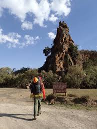

Our Story
Born from the Rift Valley. Guided by heart.
Nakuru Native
Panda grew up watching flamingos paint Lake Nakuru pink at dawn. Today, those childhood mornings have become Kenya's most personal safari experience. Every itinerary is hand-crafted — no generic tours, no rushed schedules. Just you, the wildlife, and a guide who genuinely loves this land.
No online payments. Book directly via WhatsApp or call. Transparent pricing, zero middleman.
Private, personalised itineraries — never group tours
Deep conservation ethics, low-impact footprint
Sunrise to sunset — flexible, unhurried pacing
Direct booking — WhatsApp or call, real prices